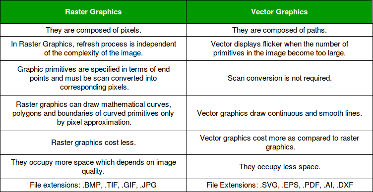

An image is a visual representation or depiction of an object, scene, person, or concept. In the context of digital technology, an image is often a two-dimensional array of pixels, where each pixel represents a tiny unit of color or grayscale value. Images can be created using various methods, such as photography, painting, drawing, or digital design. Digital images are commonly used in computer graphics, multimedia, and various forms of media. They can be stored and transmitted in different file formats, such as JPEG, PNG, GIF, and others. Images play a crucial role in communication, art, science, and many other fields.
There are various types of images, and they can be classified based on different criteria such as content, format, and purpose. Here are some common types of images: Raster Images (Bitmap Images): JPEG (Joint Photographic Experts Group): Commonly used for photographs and images with complex color variations. It uses lossy compression. PNG (Portable Network Graphics): Supports transparent backgrounds and lossless compression. Often used for web graphics. GIF (Graphics Interchange Format): Supports animations and uses lossless compression. It has a limited color palette. Vector Images: SVG (Scalable Vector Graphics): Based on XML, SVG is a vector image format that is scalable without loss of quality. It's commonly used for web graphics. Digital Photographs: Images captured by digital cameras. They are often stored in formats like JPEG.

A pixel (short for "picture element") is the smallest unit of a digital image. It represents a single point in an image and contains information about color and position.
HTML (Hypertext Markup Language) is the standard markup language for creating web pages.
HTML, or HyperText Markup Language, is the standard markup language used to create and design the structure of web pages. It is a fundamental building block of the World Wide Web and is essential for creating and formatting web content. HTML consists of a series of elements, which are tags surrounded by angle brackets (< >), each serving a specific purpose in the structure and presentation of web content
Hosting refers to the process of storing, serving, and managing files, data, or content for a website or application on a server. When you create a website or web application, the files that make up your site (such as HTML, CSS, images, and other media files) need to be stored on a server so that they can be accessed by users over the internet
Web Hosting: Web hosting is a service provided by hosting companies or providers that allows individuals and organizations to make their websites accessible on the internet. These companies offer server space, resources, and infrastructure to store and serve website files.
Types of Hosting: Shared Hosting: Multiple websites share resources on a single server. It is cost-effective but may have limitations in terms of performance and resources. Virtual Private Server (VPS) Hosting: A virtualized server environment where multiple virtual servers coexist on a single physical server. Each virtual server has its own dedicated resources. Dedicated Hosting: A single server is dedicated to a single user or organization, providing maximum control and resources. Cloud Hosting: Resources are distributed across multiple servers, providing scalability and flexibility. Users pay for the resources they consume.
AR (Augmented Reality), VR (Virtual Reality), and MR (Mixed Reality) are immersive technologies that blend digital elements with the real world. They have different levels of immersion and interaction with the user.
Multimedia involves the use of various forms of content, such as text, images, audio, and video, to convey information.
Multimedia refers to the use of a combination of different forms of content, such as text, graphics, audio, video, and interactive elements, to convey information or entertainment. The term "multimedia" is derived from the fact that it involves the integration of multiple media types to create a richer and more dynamic experience for the user.